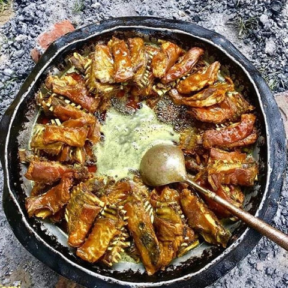

Tabakhmaaz

Tabak maaz-a traditional meat product of wazwan made up of rib portion of lamb/mutton meat
It is one of many dishes that is present on the plate being served which is known as
trami in the traditional language. It is very crispy and crunchy to eat.
The key ingredients required for making this dish are:
- Rib portion of sheep.
- Desi Ghee.
- Salt.
- Turmeric.
- Ground Garlic.
- Dry Ginger Powder.
- Cloves.
- Black Cardamom.
The steps to be followed to prepare this dish are:
- Bring the water to a boil; add the ribs. Continue to boil, removing the scum that rises to the surface.
Repeat until the water is clear. Boil covered till the ribs are half done.
- Add the garlic and mix well. Continue to boil for another 10 minutes.
- Add the salt and boil covered, continuously till the membrane between the ribs can be pierced with the thumb.
- Remove the pan from the heat and drain the water.
- Cool the ribs and then immerse in a pan of cold water. Wash thoroughly and keep them aside. Do not discard this water.
- Chop the ribs with a heavy, sharp knife into 8 equal rectangular pieces.
- Boil the water in which the ribs were washed.
- Add the chopped ribs, salt, dry ginger powder, cloves, black cardamoms and turmeric powder. Mix well.
- Let it boil until the bones can be extracted from the membrane easily.
- Remove the pan from the heat and take out the ribs with a slotted spoon. Keep aside.
- Discard the water.
- Arrange the ribs in a large frying pan, so that they don't overlap.
- Pour the ghee over them. Fry until they are reddish brown all over. Turn occasionally.
- Drain out the ghee before serving.
The key ingredients and how to cook it.